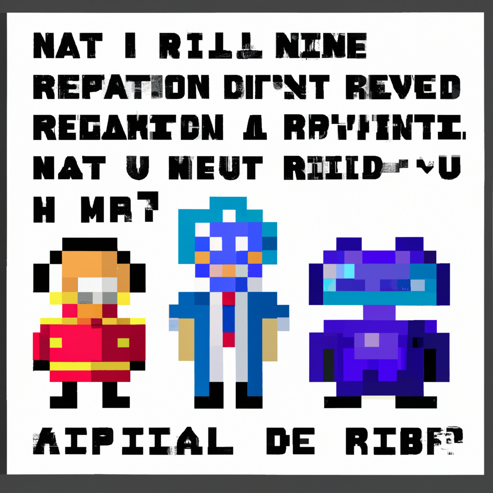

Why AI will never replace the radiologist
As the medical field continues to evolve, the use of artificial intelligence (AI) in radiology has generated much discussion. AI-driven algorithms can scan images and detect anomalies with impressive accuracy. But can AI ever replace the radiologist?
In this blog post, I'm going to explain why I think that AI will never replace the radiologist. I'll also discuss some of the cons of using AI in radiology.
First of all, AI can fail to detect even the most obvious abnormalities. In fact, AI-driven algorithms have frequently produced false positives due to small errors that could easily be detected by a radiologist. This is because AI relies on machine learning algorithms which are not able to detect subtle differences that humans can.
Secondly, AI is not yet able to provide the same level of patient care as a radiologist. Radiologists are trained to provide patient-specific advice and support, something that AI is unable to do. This means that AI cannot replace the radiologist in terms of providing highly personalized care.
Finally, AI is not yet able to cope with the complexities of the human body. It can detect abnormalities in an image, but it cannot accurately diagnose a condition or provide treatment advice. This means that a radiologist is still needed to interpret the images and ensure that the patient receives the best possible care.
In conclusion, AI will never replace the radiologist. AI can be a useful tool for detecting abnormalities in images, but it is not yet able to cope with the complexities of the human body. Radiologists are still needed to provide personalized advice and support to patients, as well as to accurately diagnose and treat any issues.